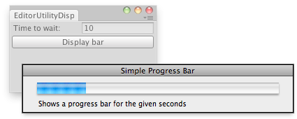

EditorUtility.DisplayProgressBar
public static void DisplayProgressBar(string title,
string info,
float progress);
Description 描述
Displays or updates a progress bar.
The window title will be set to title and the info will be set to info.
Progress should be set to a value between 0.0 and 1.0, where 0 means nothing done and 1.0 means 100% completed.
This is useful if you perform any lengthy operations in your editor scripts or wizards,
and want to notify the user about the progress.
See Also: DisplayCancelableProgressBar, ClearProgressBar functions.

Progress bar in the editor.
using UnityEditor; using UnityEngine; using System.Collections;
// Simple Editor Script that fills a bar in the given seconds. public class EditorUtilityDisplayProgressBar : EditorWindow { public float secs = 10f; public float startVal = 0f; public float progress = 0f; [MenuItem("Examples/Progress Bar Usage")] static void Init() { UnityEditor.EditorWindow window = GetWindow(typeof(EditorUtilityDisplayProgressBar)); window.Show(); }
void OnGUI() { secs = EditorGUILayout.FloatField("Time to wait:", secs); if (GUILayout.Button("Display bar")) { if (secs < 1) { Debug.LogError("Seconds should be bigger than 1"); return; } startVal = (float)EditorApplication.timeSinceStartup; } if (progress < secs) EditorUtility.DisplayProgressBar("Simple Progress Bar", "Shows a progress bar for the given seconds", progress / secs); else EditorUtility.ClearProgressBar(); progress = (float)(EditorApplication.timeSinceStartup - startVal); }
void OnInspectorUpdate() { Repaint(); } }